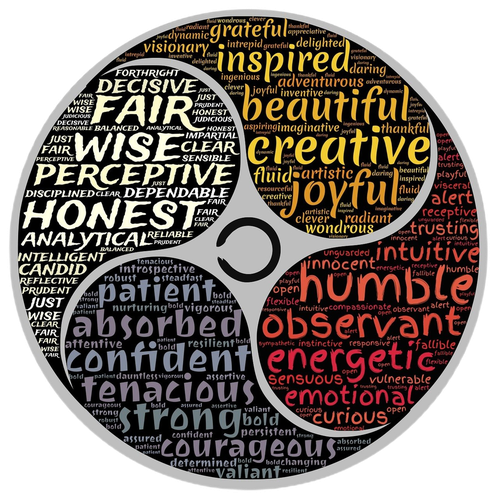
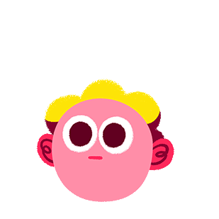
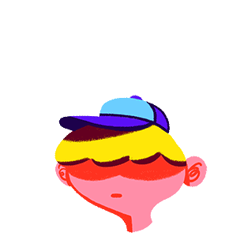
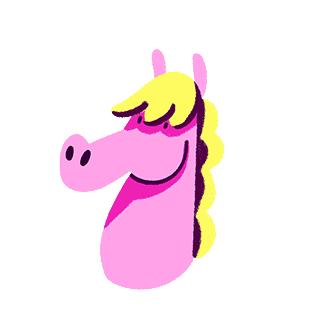
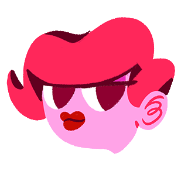

| WELCOME |
|---|
| Home | Personal | Personality Trait | Professional | Storyboard | Reference |
Navigation |
 |
Responsible, compassionate, ambitious, and conscientious are four (4) main traits that I pride myself on. I believe that these are a few traits
that build good character and respect from others. Being responsible has driven me to accept accountability for my behaviour and choices. On
the other hand, my compassion shines through whenever I witness the suffering or misfortune of others whether it may be physical, or emotional.
In some instances, it’s disheartening to be unable to assist a friend or even stranger whenever they’re struggling. Ambition empowers individuals
to achieve their goals. For me, in particular, it gives me that constant motivation I require even when my tank is on E. The desire of possibly
becoming all I aspire fills me with joy. My ambition embraces my conscientiousness as I am more inclined to do things to the best of my ability.
I believe that the type of work you produce speaks to the individual that you are. Being thorough and vigilant in your efforts often produces
quality work.


Feeling rather than thinking is the natural state of my mind. My emotions almost always get the best of me in every situation I encounter. I react
before thoroughly thinking an issue or conversation through. I’d describe it as emotionally impulsive. Recently, I’ve started to take a quick time
out to analyze how I feel and create a rational response or solution. Emotions are a huge part of what makes us human; however, letting them overpowering
us may sometimes let us behave out of character.




There are a few activities that I enjoy partaking in, some more than others I require to get through my day. Take a look at the list below of some of my likes:
Some of my dislikes are generated from my introverted personality and personality traits. Even though they are few, here’s a list of a few of my dislikes:
My leisure time is mostly dedicated to my hobbies, most aren’t that exciting but to me I feel a sense of joy and pleasure while partaking in some of these activities. This is a list of my hobbies: